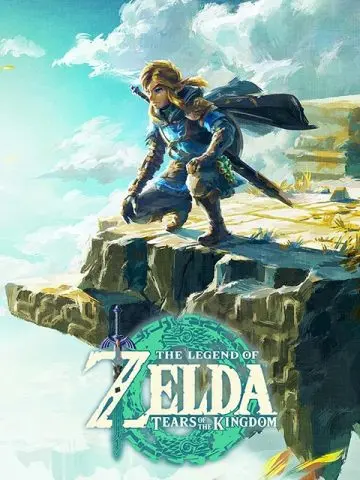
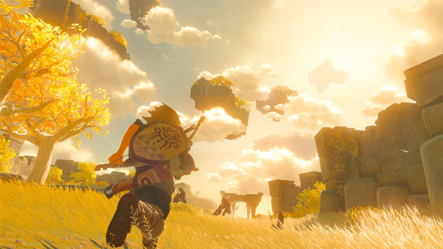

Depois de jogar Zelda: Breath of the Wild, fiquei completamente encantado e acreditava que nenhum outro jogo conseguiria me fazer sentir a mesma coisa. No entanto, Tears of the Kingdom superou todas as minhas expectativas e trouxe esse sentimento de forma ainda mais intensa.
A sua jogabilidade é, sem dúvidas, a melhor que já experimentei na vida. Embora a trilha sonora seja incrível e a direção de arte impressionante, o grande destaque fica para a liberdade que o jogo oferece, e sua gameplay completamente bem trabalhada, que oferece inúmeras maneiras de jogar o jogo, seja escalando uma montanha, andando a cavalo, usando seu escudo de skate para descer um morro ou apenas enfrentando inimigos pelo reino altamente bem feito e imersivo. Devido às limitações do hardware para o qual foi projetado, os gráficos em si são simples, mas passam longe de ser feios; a direção de arte envolvida é uma das mais belas já criadas na história dos games.Realmente é o meu jogo favorito
A jogabilidade é o grande ponto forte do título, oferecendo um nível de liberdade sem precedentes no mundo dos games. A física apurada e as novas mecânicas de construção e fusão de itens permitem resolver desafios de formas completamente únicas, tornando a experiência fluida, criativa e extremamente gratificante.
Devido às limitações de hardware da plataforma para a qual foi projetado, os gráficos em si possuem uma estrutura simples. No entanto, eles passam longe de ser feios: a direção de arte e o estilo cel-shading são brilhantes, entregando paisagens marcantes, iluminação deslumbrante e um mundo visualmente encantador.

A trilha sonora do jogo é uma verdadeira obra de arte que vai muito além de um simples fundo musical. Ela utiliza o silêncio e suaves notas isoladas de piano para construir uma atmosfera contemplativa durante a exploração, transmitindo uma sensação profunda de vastidão e solidão no mundo aberto.
Nos momentos mais intensos, como em batalhas contra chefes ou ao saltar dos céus, a música se transforma em arranjos orquestrais complexos com instrumentos de sopro e percussão marcantes. Além disso, a forma como o jogo reaproveita e desconstrói temas clássicos da franquia cria uma forte conexão emocional com o jogador a cada nova descoberta. A franquia Zelda é marcada por suas excelentes trilhas sonoras e considerada uma das franquias com as melhores trilhas já feitas e sem dúvida, The Legend of Zelda: Tears of the Kingdom sustenta esse cargo
Com uma média impressionante de 96 / 100 dada pela crítica especializada, Tears of the Kingdom recebeu o selo de Universal Acclaim. Os analistas destacaram principalmente a genialidade do sistema de física, a liberdade criativa dada ao jogador e a expansão do mundo de Hyrule. Com essa nota, o jogo sustenta o histórico da franquia em ter notas altas, como o clássico The Legend of Zelda: Ocarina of Time e sua nota de 99 / 100, sendo considerado o melhor jogo de todos os tempos.